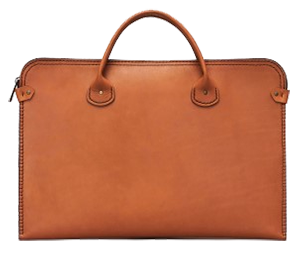

| ID | Название | Фото | Цвет | Размер | Характеристики | Описание |
|---|---|---|---|---|---|---|
| 12 | Ремень Congnac |  | 120 |
|
Кожаный пояс – неотъемлемый элемент стиля как в повседневном, так и в классическом образе. Аксессуар оснащен прочной литой пряжкой, а его надежное крепление на трех латунных винтах позволяет вам легко подогнать длину ремня под свои предпочтения. В производстве используется натуральная кожа класса люкс, подвергнутая уникальной технологии обработки (Double Face). Изнаночная сторона изделия также тщательно обработана, обеспечивая исключительную гладкость. Ремни из коллекции "Pull up" обладают эффектом "быстрого состаривания", приобретая привлекательную и интересную текстуру при деформации. |
|
| 12 | Ремень Congnac | 120 |
|
Кожаный пояс – неотъемлемый элемент стиля как в повседневном, так и в классическом образе. Аксессуар оснащен прочной литой пряжкой, а его надежное крепление на трех латунных винтах позволяет вам легко подогнать длину ремня под свои предпочтения. В производстве используется натуральная кожа класса люкс, подвергнутая уникальной технологии обработки (Double Face). Изнаночная сторона изделия также тщательно обработана, обеспечивая исключительную гладкость. Ремни из коллекции "Pull up" обладают эффектом "быстрого состаривания", приобретая привлекательную и интересную текстуру при деформации. |